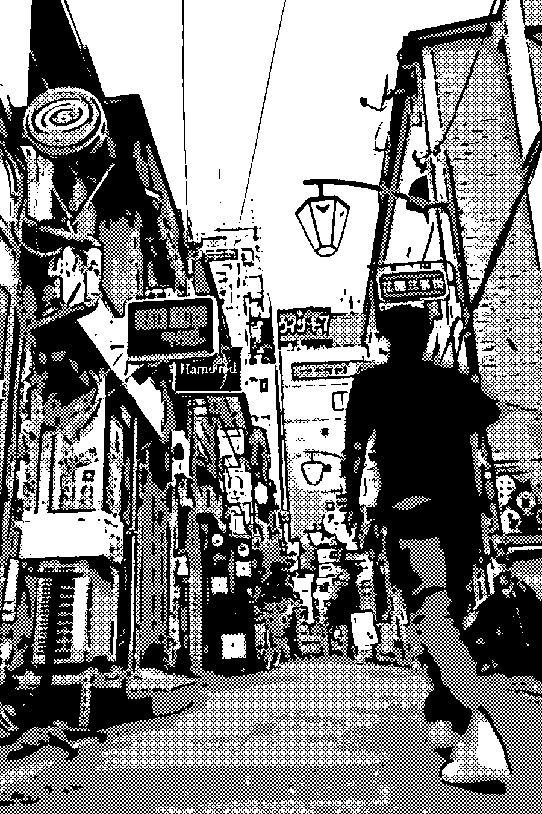

第一週
¥0

ひとりごとの
周波数
宵町、二〇一〇年。
好きなものの話を、
ずっと黙っている。
好きなものの話を、
ずっと黙っている。
二〇一〇年四月、中央線沿いの街・宵町。レコード屋でバイトする大学生の一年を、一週ずつ過ごす恋愛アドベンチャー。
平日はバイトとレコード掘り、週末は誰と会うか。好きなものの話を、知ったかぶりでするか、素直に言うか。

二〇一〇年四月、中央線沿いの街・宵町。レコード屋でバイトする大学生の一年を、一週ずつ過ごす恋愛アドベンチャー。
平日はバイトとレコード掘り、週末は誰と会うか。好きなものの話を、知ったかぶりでするか、素直に言うか。